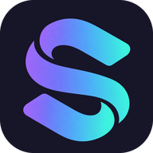

Aguarde. Nenhuma instalação foi iniciada.
Os modelos são baixados na primeira ativação na mesa. Bibliotecas instaladas ficam disponíveis para configuração; tradução e voz continuam usando os serviços atuais.